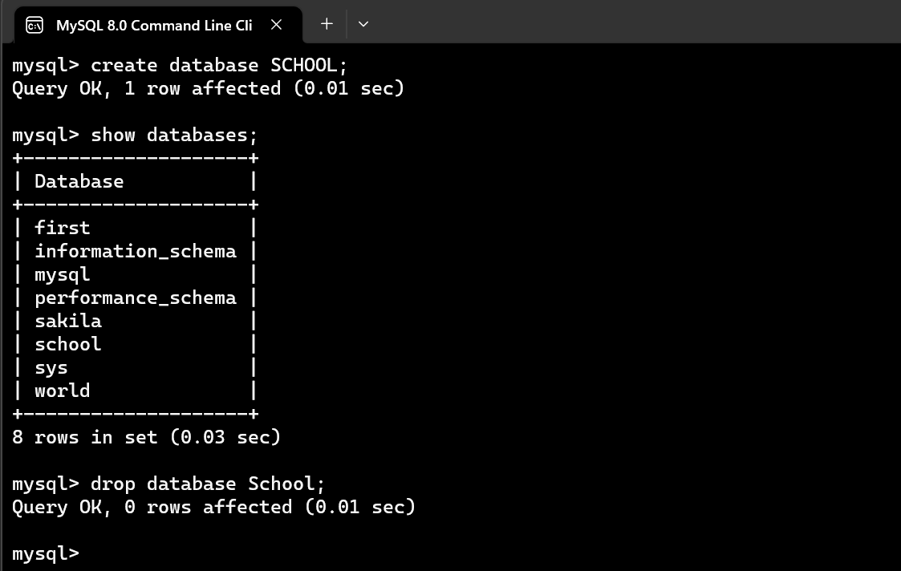

First and foremost we need to understand what is data. Data is a collection of facts about the object of interest. A data about a student may include information like name, unique id, age, address, education, etc. The software has to store the data as it is required to answer a question e.g, How many students are of age 15?
Database:
A database is an organized collection of data, which is generally stored and accessed electronically from a computer system. In simple words, we can say a database in a place where the data is stored. The best analogy is the library. The library contains a huge collection of books of different genres, here library is database and books are the data.
The database can be classified broadly into the following groups:
- Centralized database
- Distributed database
- NoSQL database
- Operational database
- Relational database
- Cloud database
- Object-oriented database
- Graph database
Now we will be focusing more on the relational database which uses SQL for its operations. Let's use some of the
How to Create a database?
We use CREATE DATABASE statement to create a new database.
Syntax:
CREATE DATABASE databasename;
Example:
CREATE DATABASE School;
So the database of name School will be created. If you want to delete this database, you have to use the
following syntax.
How to Drop a database?
Syntax:
DROP DATABASE databasename;
Example:
DROP DATABASE School;
The database with name School will be deleted.
